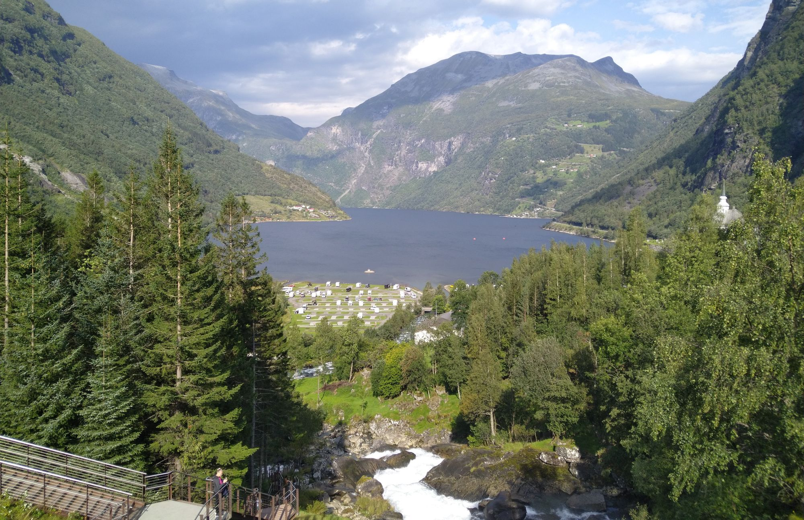

Research Scientist · Norwegian Institute for Nature Research (NINA)
Environmental Data Science & Earth Observation
Land System Science · Biodiversity · Climate Research

About me
I am a research scientist specialising in Environmental Data Science and Earth Observation, with a focus on Land System Science, biodiversity, and climate change. My research addresses land-use and land-cover dynamics, ecosystem responses, and human–environment interactions across Arctic, boreal, and temperate regions.
I design and apply spatial modelling frameworks integrating satellite time series, machine learning, and GeoAI to quantify long-term environmental change and climate-driven ecosystem transformations.
Alongside my research, I have experience leading and managing research laboratories as well as international and national research projects, fostering interdisciplinary collaboration and knowledge exchange. I am also dedicated to teaching and mentoring students at various academic levels.
Education
Experience
Research
Output
Community
Get in touch
I welcome inquiries about joint research, data sharing, student supervision, and interdisciplinary projects in environmental data science.